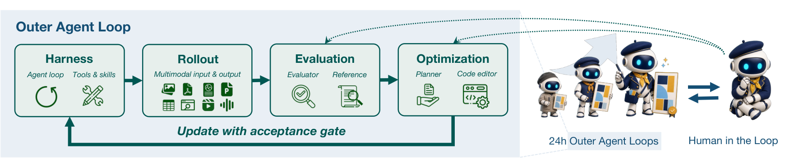
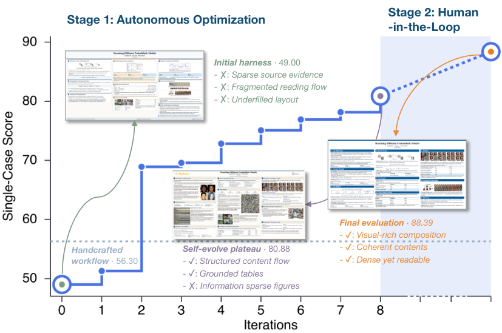

AutoDesign: Meta-Harness Optimization for Long-Horizon Agentic Design
TL;DR
- AutoDesign (arXiv 2608.13560; Luo, Jiang, Zou, et al.) puts the harness itself inside the optimization loop: an outer "meta-harness" reads rollout trajectories and evaluator scores across tasks, identifies recurrent failures, and directs a coding agent to propose a bounded rewrite of the design harness — accepted only if it improves the training score without degrading the dev score.
- Instantiated on paper-to-poster generation with the new PosterBench (100 papers, five disciplines), AutoDesign scores 78.32, beating the closed-source Claude Design by 7.45 points; one autonomous run is 253 tool calls and 11 editing turns in 40 minutes for under $3.
- The learned DesignHarness is portable scaffold knowledge, not a fit to one model: dropped into seven other code-agent–model configurations it lifts the average PosterBench score from 54.99 to 67.39, and a system-blind human study ranks AutoDesign's posters highest.
Why this matters
Most harness-evolution work this tracker follows optimizes prompts or skills inside a fixed loop; AutoDesign is the cleanest published version of the more radical move — treat the entire harness (the code that decides how the agent ingests sources, generates, critiques, and revises) as the parameter, and a fixed model as the constant. That inverts the usual RL framing: instead of \(\max_\theta\) with a fixed harness, it's \(\max_H\) with frozen \(\pi_\theta\). Two design choices matter beyond the poster domain. First, the acceptance gate is a train/dev double check, which is a direct answer to the overfitting critique that Harness Delta Attribution and Rethinking Harness Evolution leveled at self-evolving harnesses — the authors gate every harness edit on held-out tasks during evolution rather than discovering the overfit afterwards. Second, the transfer experiment is the right falsification test: if harness gains were benchmark memorization or model idiosyncrasy, moving DesignHarness across seven agent–model stacks would not add +12.4 points on average. Design tasks are also a shrewd testbed — rewards are human-preference-shaped rather than verifiable, so this doubles as a case study of harness RSI under judge-based (not unit-test) evaluation.

Figure 3 from the paper: the inner loop (design harness: generate → critique → revise an editable artifact) nested inside the outer loop (meta-harness: rollout aggregation → failure diagnosis → bounded harness update → train/dev acceptance gate).The core idea
Formally, a design harness \(H\) wraps a fixed model \(\pi_\theta\) and maps a task input \(x\) with source context \(c\) to an artifact:
and the meta-objective is the expected evaluator score over the task distribution:
where \(R_{\mathrm{meta}}\) is a human-preference-grounded evaluator (initialized from annotated reference artifacts). The optimizer is not gradient-based: at iteration \(t\), a meta-harness optimizer produces the next harness candidate from the current harness, this round's trajectories \(\bm{\tau}_t\), scores \(\bm{s}_t\), and a persistent optimization record \(\mathcal{L}\):
with \(P\) implemented as a coding agent instructed to make a bounded update targeting diagnosed recurrent failures. The candidate is admitted through an acceptance gate:
The record \(\mathcal{L}\) logs what has been tried, supporting comparison, reproducibility, and rollback; the outer loop deliberately keeps a single active harness per iteration — no tree search over harness variants.
How it works
Inner loop (the design harness). The harness transforms the source paper into an editable output (not a one-shot render), then iteratively revises it under critic feedback until a stopping condition. The optimized DesignHarness that evolution converges to has three stages — paper ingestion, artifact generation and revision, and validation/finalization — i.e., the outer loop rediscovered and then refined a classic generate-critique-revise architecture with domain-specific checks.
Outer loop (the meta-harness), per iteration: rollout → evaluation → update proposal → acceptance:
# AutoDesign meta-harness optimization (Algorithm 1, abridged)
Given: frozen model π_θ, initial harness H_0, evaluator R_meta,
task sets D_train, D_dev, iterations T
run H_0 on D_train → trajectories τ_0, scores s_0
run H_0 on D_dev → scores s_dev_0
for t = 0 .. T-1:
diagnosis = meta_optimizer.analyze(τ_t, s_t, record L)
# recurrent failure patterns across tasks
H'_{t+1} = coding_agent.bounded_update(H_t, diagnosis)
evaluate H'_{t+1} on D_train and D_dev
if J_train improves AND J_dev does not degrade:
H_{t+1} = H'_{t+1} # accept
else:
H_{t+1} = H_t # reject, log to L
append (H'_{t+1}, scores, decision) to L # enables rollback
return H_T, L
Grounding the evaluator. \(R_{\mathrm{meta}}\) is initialized from annotated reference artifacts so that "better" is anchored to human design priors, with optional natural-language guidance as a steering channel. For PosterBench scoring, a rubric reward aggregates seven weighted dimensions:
where \(q_{i,j}\) is the 0–10 judge score of poster \(p_i\) on dimension \(j\) given paper assets \(A_i\), and \(\alpha_j\) are the dimension weights.
Human evaluation. The blind study uses pairwise comparisons fit with a Bradley–Terry model,
with \(\beta_i\) the latent quality of system \(i\), over \(|\mathcal{T}|=100\binom{4}{2}=600\) comparisons (100 papers × all pairs of 4 systems).
Results
- Main track: 78.32 on PosterBench (100 papers, five disciplines), +7.45 over the closed-source commercial Claude Design — with the fully autonomous loop costing under $3 per poster (253 tool calls, 11 editing turns, ~40 minutes), reaching average conference-poster quality in human evaluation.
- Transfer (the key result): integrating the learned DesignHarness into seven controlled code-agent–model configurations raises the average PosterBench score from 54.99 to 67.39. Whatever the outer loop learned, it is largely model-agnostic scaffold knowledge.
- Optimization dynamics: the trace on a representative paper (Figure 1a) shows autonomous optimization improving the initial harness before plateauing — after which optional human natural-language guidance can redirect the evaluator/optimizer (the loop is autonomous but steerable).

Figure 1 from the paper: (a) poster score across meta-harness iterations — autonomous improvement, then a plateau; (b) PosterBench gains when the learned DesignHarness is integrated into other code-agent–model configurations. - Human preference: highest preference among the evaluated systems in the system-blind Bradley–Terry study; the paper's own poster (Figure 2) is generated by the system itself, which is a nice self-referential demo.How it connects
- Recursive Harness Self-Improvement (Sakana/Berkeley) — the closest sibling: harness-as-specification evolved from execution feedback. AutoDesign's distinct contributions are the explicit train/dev acceptance gate and the cross-stack transfer evaluation.
- Harness Delta Attribution and Rethinking Harness Evolution — the skeptics' corner of this tracker: both showed harness-evolution gains are often overfitting or extra test-time compute. AutoDesign's dev-gate is a built-in defense, and its +12.4-point transfer across seven configurations is exactly the kind of evidence those posts demanded — though transfer across task domains remains untested.
- HarnessCompass — shares the "guide harness evolution toward generalization" goal; HarnessCompass steers the proposal direction, AutoDesign filters at the acceptance gate. The two mechanisms are composable.
- GEPA — added the same day: reflective, natural-language-mediated optimization with selection discipline (Pareto front there, train/dev gate here) as the sample-efficient alternative to gradient RL. AutoDesign is GEPA's philosophy applied to the whole harness rather than the prompt.
- CAKE — also added today: co-evolving the kernel IR and verifier inside the harness. Same thesis at a different layer of the stack: the substrate the agent works through should itself be under evolution, with the workload telling you what's missing.
- Harness-R1 and Living-Harness — runtime/episodic harness edits; AutoDesign's edits are offline across a task corpus with an explicit record \(\mathcal{L}\) and rollback, closer to "harness training" than "harness memory."
Critical take
The elephant: PosterBench is introduced by the same paper whose system tops it, and \(R_{\mathrm{meta}}\) both drives evolution and (via the rubric) grades the final comparison — self-evaluation-adjacent even with the annotated-reference grounding and the blind human study as partial counterweights. The rubric weights \(\bm{\alpha}\) are stated but not derived, and a judge-scored aesthetic task is exactly where judge idiosyncrasies become harness "knowledge" (the Wiggle result this tracker added today says judge verdicts are alarmingly movable). Second, the acceptance gate is greedy hill-climbing with a single active harness — no exploration over harness space — so the plateau in Figure 1a may be a local optimum that tree search or population methods (à la GEPA's Pareto pool) would escape; the authors note the no-tree-search choice without ablating it. Third, poster generation has a fixed, legible task grammar; the claim that meta-harness optimization "aligns with human design priors" needs a messier domain (data analysis reports, slide decks from meetings) before I'd generalize. What survives skepticism comfortably: the formulation \(H^\star=\arg\max_H J(H)\) with a coding-agent proposal operator and a dev-gated accept — that pattern is reusable anywhere you can score artifacts, and the seven-stack transfer shows the output is a real, portable artifact rather than benchmark residue.
If you remember three things
- Make the harness the optimization variable: \(y\sim H(\pi_\theta,x,c)\), \(H^\star=\arg\max_H J(H)\), with a coding agent as the update operator \(P(H_t,\bm{\tau}_t,\bm{s}_t,\mathcal{L})\) and a train-improves ∧ dev-doesn't-degrade acceptance gate.
- The transfer test is the honest metric for harness evolution: DesignHarness lifts seven other agent–model stacks from 54.99 to 67.39 average — scaffold knowledge, not benchmark memorization.
- Keep an optimization record with rollback (\(\mathcal{L}\)) and gate on held-out tasks during evolution — the two cheapest defenses against the overfitting failure mode that has dogged self-evolving harnesses in this tracker.